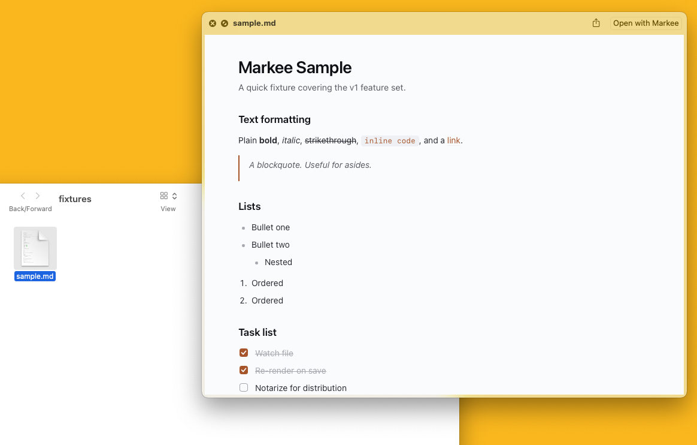
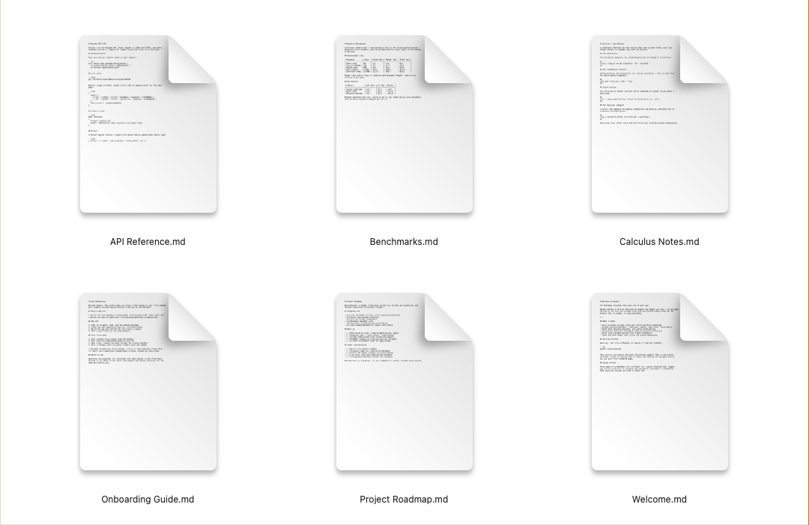
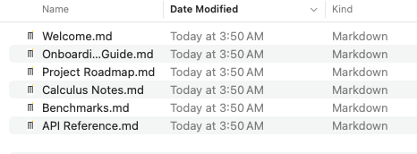
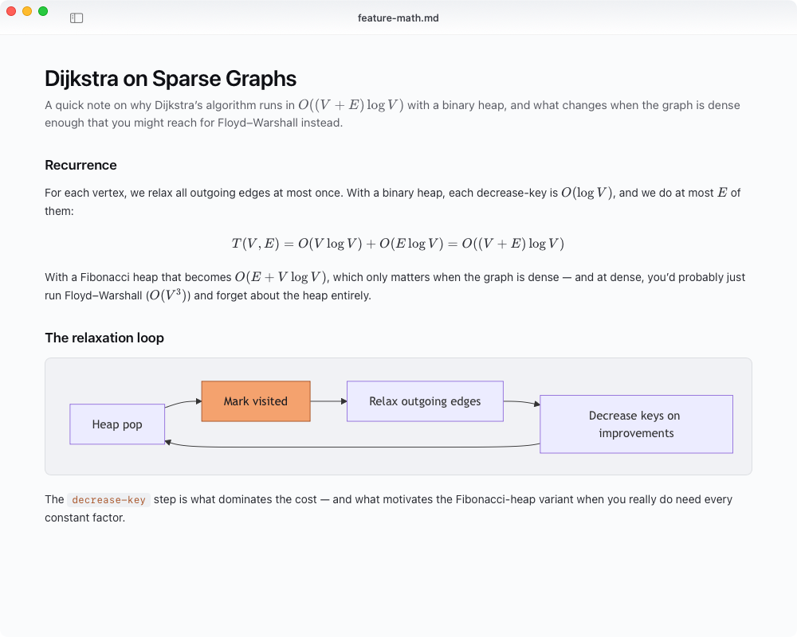
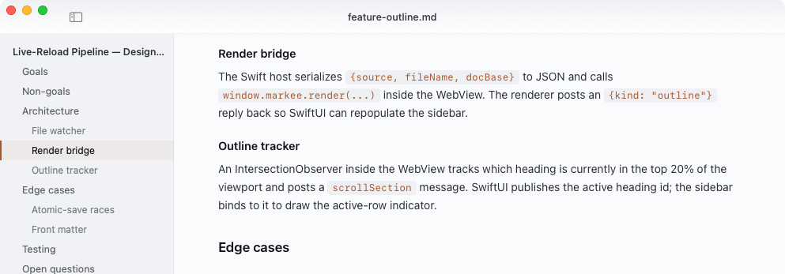

Why Markee
Keep your editor. Markee handles the preview.
Lives in your editor's shadow
Vim, Cursor, Zed, VS Code — Markee is editor-agnostic. Nothing new to learn.
Watches and re-renders on save
A kqueue watcher re-renders the instant you save. No plugin, no polling, no refresh.
Renders the whole stack
GFM, KaTeX math, Mermaid, highlight.js, footnotes, task lists, front matter — all offline.
Features
Built for the way developers actually read Markdown.

Quick Look, fully rendered
Press Space on any Markdown file in Finder and Markee renders it in place — headings, tables, code, math, and diagrams — instead of showing raw source. It's the same renderer as the app, running in a sandboxed Quick Look extension.

At home in Finder
Every .md file gets a per-file thumbnail of its actual rendered content, so a folder of notes is scannable at a glance. Where a thumbnail isn't available, files fall back to a clean, branded Markdown document icon.


Math and diagrams, rendered in the WebView
KaTeX for inline and display equations, Mermaid for graphs and sequence diagrams, highlight.js for syntax — all rendered right in the WebView.

An outline that tracks where you are
The sidebar always knows the current heading — driven by an IntersectionObserver inside the WebView posting back to the SwiftUI host. Toggle the outline with ⌘⌥\ and click any row to jump.
More
Everything else it does.
Copy & export, any way you need
Three copy modes — verbatim, reflowed, rendered — plus Print, PDF, and self-contained HTML.
Open in editor at any heading
Press ⌥⌘E or right-click an outline row to jump your editor to that line. Auto-detects seven editors.
A linked folder of notes
Click a .md link to move between files, with Back/Forward, a file tree, and [[wiki-links]].
Search the whole workspace
A ranked full-text palette ⇧⌘O across every note, plus in-document find ⌘F.
Signed, notarized & private
Developer-ID signed and notarized. Every renderer is vendored and runs locally — no telemetry.
Tuned & out of the way
Set theme, accent, and font in Preferences. Float on top, all Spaces, or dim with Ghost Mode.
Install
Download, drag, open — no Homebrew tap, no Gatekeeper detour.
-
1
Download
Markee.app.zipfrom the latest releaseUnzip it, drag
Download v1.2.0Markee.appto/Applications. -
2
Open it
Markee is signed with an Apple Developer ID and notarized by Apple, so it opens with a normal double-click — no Gatekeeper warning, no right-click trick, no Terminal. After that it keeps itself up to date, checking GitHub Releases and installing new versions in place.
Prefer to build it yourself? From-source instructions on GitHub — a few just recipes.